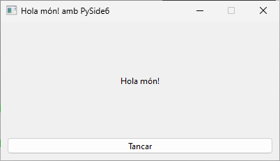

Creació d'executables amb pyinstaller
Hola món!
En esta pràctica aprendrem a construir executables per als diferents sistemes operatius fent ús de pyinstaller.
Per a instal·lar pyinstaller executem la següent ordre:
Partirem del següent codi font:
| Python |
|---|
| import sys
from PySide6.QtWidgets import (QApplication, QMainWindow,
QWidget, QVBoxLayout, QLabel, QPushButton)
from PySide6.QtCore import Qt
class MainWindow(QMainWindow):
def __init__(self):
super(MainWindow, self).__init__()
self.setFixedSize(400, 200)
self.setWindowTitle("Hola món! amb PySide6")
layout = QVBoxLayout()
label = QLabel("Hola món!")
label.setAlignment(Qt.AlignCenter)
layout.addWidget(label)
button = QPushButton("Tancar")
button.pressed.connect(self.close)
layout.addWidget(button)
widget = QWidget()
widget.setLayout(layout)
self.setCentralWidget(widget)
if __name__ == '__main__':
app = QApplication(sys.argv)
window = MainWindow()
window.show()
app.exec()
|
És l'Hola món! amb un botó per tancar.

Ara executem a un terminal:
| Bash |
|---|
| pyinstaller.exe -n "Hola món!" -w --onefile .\holamon_pyside6.py
|
On les opcions utilitzades són:
- -n per a donar-li nom a l'executable
- -w per a indicar que és un programa amb GUI i no de consola, de forma que no apareixerà la shell durant la seua execució
- --onefile que empaquete tots els arxius en un únic arxiu executable